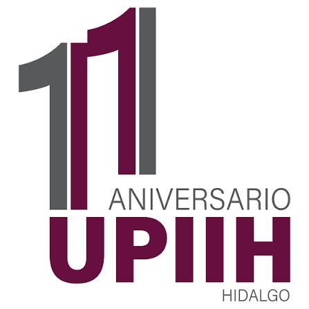
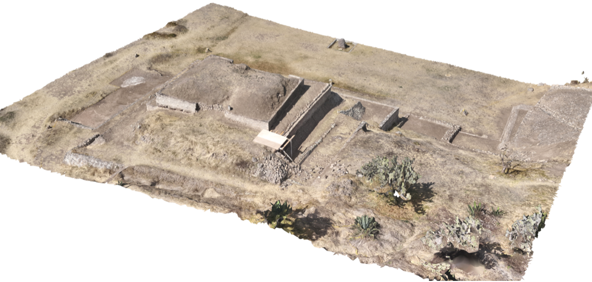
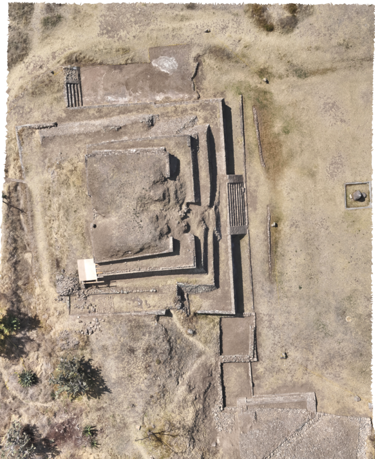
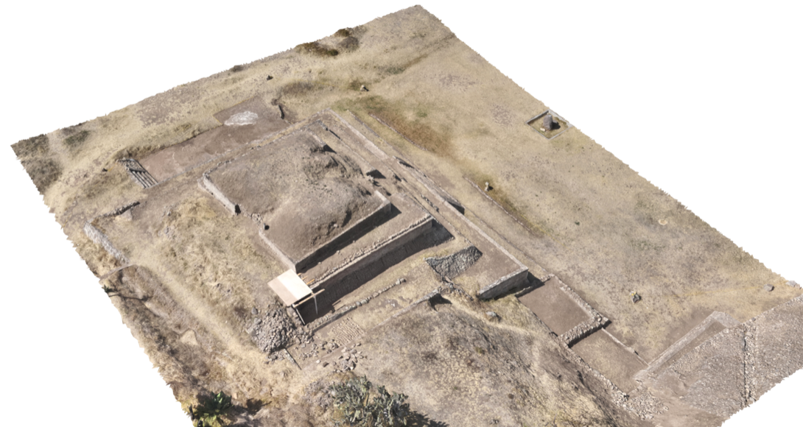

Identidad visual, sistema de interfaz y criterios de diseño de la aplicación de la Zona de Monumentos Arqueológicos de Huapalcalco, Tulancingo, Hidalgo.


Documento de trabajo. Las fechas y datos históricos se validarán con el Instituto Nacional de Antropología e Historia antes de su publicación en la aplicación.
Huapalcalco significa lugar de la casa de madera. Es uno de los asentamientos más antiguos del valle de Tulancingo y la tradición lo vincula con Ce Ácatl Topiltzin antes de su llegada a Tula. La aplicación lleva su pirámide de tres cuerpos a la mesa del visitante, en realidad aumentada y en recorrido virtual.
La interfaz es blanca y silenciosa para que el color cálido lo ponga el propio sitio: la tierra, la piedra y los nopales capturados por el dron. El verde brote marca lo que se puede tocar y el negro tinta marca dónde está el usuario.
Ninguna capa tapa la pirámide más de lo necesario. En tablet, el modelo y la información conviven en pantalla.
El liquid glass se reserva para navegación y controles sobre el modelo o la cámara. Lo que se lee va en blanco sólido.
Cada pantalla tiene una sola acción principal en verde brote. Si hay dos, una de ellas no es principal.
El icono, los iconos de menú y los colores secundarios salen de la pirámide, las pinturas rupestres y el paisaje del cerro.

Tres cuerpos en talud, un templo en la cima y la escalinata que corta la pirámide de arriba a abajo. Es la silueta que se ve en el modelo del dron, reducida a sus planos esenciales.
Tinta sobre brote. Icono de tienda, pantalla de inicio y splash.
Monte sobre blanco. Variante clara del icono en iOS 26 y materiales impresos.
Blanco sobre tinta. Solo para el modo oscuro del sistema en la pantalla de inicio.
Tinta sobre blanco. Sellos, oficios y documentos en una tinta.
Alrededor del icono queda libre un espacio igual a la cuarta parte de su lado. Ningún texto, logo o borde entra en esa zona. El tamaño mínimo en impresión es de 10 mm.
Rotar
Deformar
Otros colores
Efectos
El nombre se compone en Plus Jakarta Sans en peso 800, con el complemento en peso 400. La altura del icono es igual a la altura total del bloque de texto en la versión horizontal.
Los logos del INAH y de la UPIIH aparecen en la pantalla de bienvenida, en Créditos y en todo material impreso. Van a la misma altura óptica, separados por filetes de 1 px en el color de línea, siempre sobre fondo blanco y sin alterar sus colores ni proporciones. Los logos institucionales nunca se colocan sobre vidrio ni sobre el modelo.
#FFFFFF255 255 255Tarjetas, hojas y paneles#EEF2F0238 242 240Fondo de pantalla#9BE36D155 227 109Acción principal#0B121011 18 16Texto y estado activo#134E3219 78 50Iconos, progreso, enlaces#5E6A6594 106 101Texto secundario#C2492F194 73 47Solo pintura rupestreLienzo y blanco 80%, tinta 12%, brote 6%, monte y almagre 2%. La aplicación solo tiene tema claro. El calor de la paleta lo aporta la textura del modelo, por eso no se usan tonos crema ni beige en la interfaz.
El almagre es el rojo de las pinturas del cerro de La Mesa y El Huiztli. Se reserva para etiquetas y contenido de pintura rupestre y nunca se usa en botones ni alertas.
| Combinación | Relación | Uso |
|---|---|---|
| Tinta sobre blanco | 18.9 : 1 | Todo texto |
| Tinta sobre brote | 12.3 : 1 | Todo texto |
| Monte sobre blanco | 9.7 : 1 | Todo texto |
| Gris piedra sobre lienzo | 5.0 : 1 | Todo texto |
| Almagre sobre blanco | 4.9 : 1 | Todo texto |
| Brote sobre blanco | 1.5 : 1 | Nunca texto |
Licencia SIL Open Font. Los archivos van dentro de la aplicación, así que el texto se ve igual en cualquier equipo y sin conexión.
display · 34 / 800 / −1.2PirámideTítulos de pantalladisplaySub · 24 / 400de tres cuerposComplementotitle · 20 / 700Escalinata orienteTarjetas y hojasbody · 16 / 400 / 1.5La escalinata da a la plaza, donde se reunían quienes asistían a las ceremonias.Fichasdata · 20 / 700 tabular16.7 × 13.4 mMedidascaption · 12 / 500Parada 2 de 6 · 1:40 min de audioApoyoRegla de composición: el título va en peso 800 y su complemento en peso 400 en la línea siguiente, sin cambiar de color. Tamaños en puntos de pantalla. Respetar Dynamic Type en iOS y el escalado de fuente en Android.
Para acciones comunes se usan SF Symbols en iOS y Material Symbols Rounded en Android, con peso equivalente al trazo de 1.8.
Volver, cerrar, audio, ayuda, buscar y luz.
Barra de pestañas, botones superiores, hoja de la parada, barra de herramientas del visor, marcadores del modelo y controles de AR. Se usa GlassTabBar, GlassAppBar, GlassModalSheet y GlassIconButton.
Tarjetas, panel de ficha en tablet, listas, buscador y filtros. Se marcan con GlassSurfaceStyle.solid. Nunca se anida vidrio dentro de vidrio.
Margen lateral 16 pt en teléfono y 24 pt en tablet. Separación entre tarjetas 12 pt.
Flecha en círculo brote para abrir. Píldora brote para la acción principal.
El activo se expande con su nombre. Los inactivos muestran solo el icono.
Campo sólido blanco con borde de 1 px.
Vidrio. Activo en píldora tinta. AR al centro como píldora blanca.
Blanco sólido, radio 28, título doble y dos datos.
Mosaicos en píldora con icono en círculo. Progreso en monte.

Inicio. Tarjetas sólidas en blanco. Solo la barra de pestañas es de vidrio.
Parada. El modelo ocupa la pantalla y la hoja de vidrio refracta su textura.
AR. Controles de vidrio sobre la cámara y escala inicial 1:50.
La escalinata mira hacia la plaza. Desde aquí se ve el monolito en su recinto y el trazo de los cuerpos de la pirámide.
La tablet no es un teléfono ampliado. La navegación pasa a una barra lateral, el modelo queda al centro y la ficha vive en un panel fijo. Leer no tapa la pirámide.
Barra de pestañas inferior. Fichas en hojas sobre el modelo.
Modelo en la mitad superior, ficha abajo y barra lateral solo con iconos.
Tres paneles. El panel derecho se oculta para ver el modelo completo.
// lib/theme/hp_colors.dart abstract final class HpColors { static const white = Color(0xFFFFFFFF); // tarjetas, hojas static const canvas = Color(0xFFEEF2F0); // fondo static const brote = Color(0xFF9BE36D); // acción principal static const ink = Color(0xFF0B1210); // texto, activo static const monte = Color(0xFF134E32); // iconos, progreso static const stone = Color(0xFF5E6A65); // secundario static const almagre = Color(0xFFC2492F); // pintura rupestre static const line = Color(0xFFDCE3DF); // filetes } abstract final class HpRadius { static const tile = 22.0, card = 28.0, sheet = 34.0; static const pill = 999.0, button = 21.0; } abstract final class HpSpace { static const s4 = 4.0, s8 = 8.0, s12 = 12.0, s16 = 16.0; static const s24 = 24.0, s32 = 32.0, s48 = 48.0; } abstract final class HpBreakpoints { static const tablet = 600.0, tabletWide = 1024.0; }
// lib/theme/hp_type.dart // Plus Jakarta Sans en iOS, iPadOS y Android. const String hpFontFamily = 'PlusJakartaSans'; abstract final class HpText { static const display = TextStyle(fontSize: 34, fontWeight: FontWeight.w800, letterSpacing: -1.2, height: 1.0); static const displaySub = TextStyle(fontSize: 24, fontWeight: FontWeight.w400, letterSpacing: -0.5); static const title = TextStyle(fontSize: 20, fontWeight: FontWeight.w700, letterSpacing: -0.4); static const body = TextStyle(fontSize: 16, height: 1.5); static const data = TextStyle(fontSize: 20, fontWeight: FontWeight.w700, fontFeatures: [FontFeature.tabularFigures()]); static const caption = TextStyle(fontSize: 12, fontWeight: FontWeight.w500, color: HpColors.stone); } // main.dart: LiquidGlassWidgets.initialize() antes de runApp, // LiquidGlassWidgets.wrap(theme: GlassThemeData.ios27()), // GlassScaffold en cada pantalla, contenido en // GlassSurfaceStyle.solid. Tema claro únicamente.
Proyecto en conjunto con el Instituto Nacional de Antropología e Historia. Las fechas, nombres de estructuras y datos históricos están sujetos a validación del INAH. El modelo tridimensional proviene de levantamiento fotogramétrico con dron.